| Icone | Nome | Efeito |
|  | Semente do Conhecimento | Quando o Santuário de Maya é lançado e conta os tipos elementais dos personagens na equipe, será contabilizado 1 personagem Pyro, Electro e Hydro a mais. |
| Raiz da Compaixão | Oponentes marcados pelas Sementes Skandha aplicadas pela própria Nahida serão afetados pelos seguintes efeitos: · Dano de Queimadura, Florescimento, Superflorescimento e Germinação pode causar CRIT. Taxa CRIT e Dano CRIT estão fixados em 20% e 100% respectivamente. · Dentro de 8s após terem sido afetados por Aceleração, Intensificação e Propagação, a DEF diminui em 30%.. |
|
| Brotos do Karma | Aumenta o nível do Esquemas Universais em 3. O nível máximo de elevação é 15. |
|
| Caules da Interferência da Manifestação | Quando houverem 1/2/3/4 ou mais inimigos próximos sob o estado Semente Skandha e de Esquemas Universais, a Proficiência Elemental de Nahida aumenta em 100/120/140/160. | |
| As Folhas da Essência da Sabedoria | Aumenta o nível do Coração Ilusório em 3. O nível máximo de elevação é 15. |
|
 |
Frutos da Culminação da Razão | Depois de lançar Coração Ilusório, quando Nahida acerta um oponente afetado pela Semente Skandha de Esquemas Universais com um Ataque Normal ou Ataque Carregado, ela lançará Purificação Tricármica: Eliminação do Carma nesse oponente e em todos os oponentes conectados, causando Dano Dendro com base em 200% do ATQ de Nahida e em 400% de sua Proficiência Elemental. O Dano causado por Purificação Tricármica: Eliminação do Carma é considerado Dano de Habilidade Elemental e pode ser acionado uma vez a cada 0.2s. Esse efeito pode durar até 10s e será removido depois que Nahida liberar 6 instâncias de Purificação Tricármica: Eliminação do Carma. |